Sortieren in linearer Zeit
Wir kehren an dieser Stelle nochmals zum Sortierproblem zurück und stellen uns die Frage, ob wir noch schnellere Algorithmen finden können, die eventuell sogar in O(N) statt in O(N*log(N)) zum Ziel kommen. Mit Hilfe der gerade eingeführten Suchbäumen werden wir zeigen, dass dies nicht möglich ist, solange für die Sortierschlüssel nur eine paarweise Vergleichsfunktion definiert ist. Besitzen wir jedoch zusätzliche Informationen über die Schlüssel, die uns die Anwendung des Bucket-Prinzips erlauben, ist das Sortieren in linearer Zeit möglich.
Contents
Sortieren und Permutationen
Bevor wir die Grenzen des Sortierens mit Paarvergleichen analysieren, wollen wir noch etwas näher beleuchten, was beim Sortieren eigentlich geschieht. Dazu gehen wir noch einen Schritt zurück und schauen uns an, was beim Mischen eines zunächst sortierten Arrays passiert. Wir betrachten das Array mit den drei Element A, B, C sowie ein korrespondierendes Indexarray, das angibt, an welcher Position im sortierten Array die drei Elemente gehören. Solange das Hauptarray noch sortiert ist, enthält das Indexarray einfach die aufsteigende Folge 0, 1, 2:
L = A B C # Hauptarray sortiert (0. Permutation) I = 0 1 2 # Indexarray
Es gibt jetzt 5 weitere Anordnungsmöglichkeiten (imsgesamt also 6 = 3! Permutationen) für die drei Elementa A, B und C. Immer, wenn wir diese drei Elemente umordnen, ordnen wir das Indexarray so, dass das Element I[k] in jedem Indexarray uns angibt, wo sich der Buchstabe jetzt befindet, der ursprünglich (also in der sortierten Anordnung) an Position k stand:
L = A C B # 1. Permutation I = 0 2 1
L = B A C # 2. Permutation I = 1 0 2
L = B C A # 3. Permutation I = 2 0 1
L = C A B # 4. Permutation I = 1 2 0
L = C B A # 5. Permutation I = 2 1 0
In der 5. Permutation sagt beispielsweise I[0] = 2, dass der ursprünglich 0. Buchstabe (das A) jetzt an Position 2 ist. Daraus folgt, dass wir ein permutiertes Array in linearer Zeit sortieren können, wenn uns das Indexarray bekannt ist. Wir müssen einfach einmal durch das Indexarray gehen und jedes Element von Position I[k] wieder an Position k verschieben:
def sortByIndexArray(L, I):
R = [None]*len(L) # zunächst leeres Ergebnisarray
for k in xrange(len(L)):
R[k] = L[I[k]] # Elemente sortiert in R einfügen
return R
Da man nur einmal über den Bereich k = 0 ... len(L)-1 gehen muss, ist der Aufwand dieser Funktion O(len(L)), also linear. Dieser Algorithmus ist z.B. nützlich, wenn man mehrere Arrays in der gleichen Weise sortieren muss, z.B. die Liste der Studentennamen und die Liste der dazugehörigen Übungspunkte. Man kann dann einfach einmal die Permutation des Indexarrays bestimmen, und dann alle Listen entsprechend sortieren. Wie man das Indexarray mit dem Standard-Sortieralgorithmus array.sort() bestimmen kann, ist Aufgabe im Übungsblatt 9.
Sortieren als Suchproblem
Wir haben gesehen, dass wir in linearer Zeit sortieren können, wenn uns die Permutation bzw. das zugehörige Indexarray bekannt ist. Die nächste Frage lautet deshalb: Wie viele Schritte brauchen wir, um die Permutation zu finden? Dabei ist es nur erlaubt, Schlüssel paarweise zu vergleichen, und man erhält jeweils eine ja/nein Antwort. Ein solches Vorgehen kann als Entscheidungsbaum dargestellt werden. Jeder Knoten ist eine Frage, und wir gehen zum linken Kind weiter, wenn die Frage mit "ja" beantwortet wurde, ansonsten zum rechten Kind. An jeder Kante stehen die jetzt noch in Frage kommenden Permutationen, und der jeweilige Kindknoten gibt uns die nächste Frage vor. Die Blätter enthalten das Indexarray, das der Permutation entspricht:
(L[0] < L[1])
ja / \ nein
ABC / \ BAC
ACB / \ CAB
BCA / \ CBA
/ \
(L[0] < L[2]) (L[0] < L[2])
/ \ / \
ja / nein \ / ja \ nein
ABC / BCA | | BAC \ CAB
ACB / | | \ CBA
/ (2 0 1) (1 0 2) \
(L[1] < L[2]) (L[1] < L[2])
/ \ / \
ja / \ nein ja / \ nein
ABC / \ ACB CAB / \ CBA
/ \ / \
(0 1 2) (0 2 1) (1 2 0) (2 1 0)
Der Suchaufwand im schlechtesten Fall entspricht offensichtlich der Tiefe des Baumes. Bei Arrays mit drei Elementen ist die Tiefe gerade 3, wir benötigen maximal 3 Fragen bis zum Ziel. Für Arrays der Länge n gilt allgemein: Es gibt N = n! verschiedene Permutationen, der Baum muss also n! Blätter haben. Wir haben im Abschnitt Suchen gesehen, dass die Tiefe eines Baumes minimal wird, wenn der Baum perfekt balanciert ist, und dass der balancierte Baum mit den meisten Blättern der vollständige Baum ist. Die Tiefe des vollständigen Baums mit n! Blättern gibt uns also eine untere Schranke für die minimale Anzahl der Vergleiche im schlechtesten Fall.
Ein vollständiger Baum der Tiefe d hat 2d+1-1 Knoten und 2d Blätter:
| vollständiger Baum 2d+1-1 Knoten 2d Blätter |
Im Fall des Sortierens von n Elementen gilt, dass es N = n! mögliche Permutation gibt. Ein Baum mit n! Blättern hat mindestens die Tiefe log(n!). Im obigen Beispiel für n=3 gilt 3! = 1*2*3 = 6 und damit für die Tiefe d
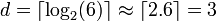
Im ungünstigsten Fall braucht man bei dem Frage-Baum drei Schritte. Weil aber
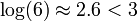
muss nicht jeder Pfad zu Ende durchlaufen werden, um die Lösung zu bekommen.Allgemein gilt
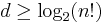
Wir können die Tiefe am einfachsten durch die Stirlingsche Näherungsformel für die Fakultät abschätzen:
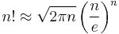
,
die asymptitisch für große n gilt. Einsetzen liefert
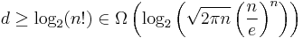
Der Logarithmus eines Produkts ist gleich der Summe der Logarithmen der einzelnen Faktoren:
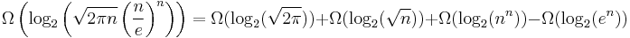
Wir vereinfachen die rechte Seite nach den Regeln der O-Notation: nur der am schnellsten wachsende Term bleibt übrig:
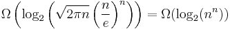
.
Den Exponenten in nn kann man vor den Logarithmus ziehen, und die Basis des Logarithmus spielt keine Rolle. Wir erhalten somit:
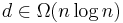
.
Somit braucht man im schlechtesten Fall mindestens
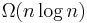
Vergleiche, und Merge Sort ist somit optimal und kann nicht weiter verbessert werden, solange man sich auf paarweise Vergleiche von Schlüsseln beschränkt.Eine exakte Herleitung dieser Tatsache, ohne Verwendung der Stirlingschen Formel, ist möglich durch
Abschätzung von Summen durch Integrale
Schreibt man die Fakultät als Produkt aus, und transformiert den Logarithmus des Produkts in eine Summe von Logarithmen, erhalten wir:
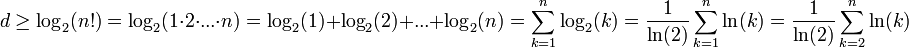
Die letzte Identität gilt, weil in der Summe weggelassen werden kann. Eine untere Schranke für die Tiefe kann man explizit bestimmen durch die Methode der
Gegeben sei eine monoton wachsende Funktion f(x) (blaue Kurve). Das bestimmte Integral über die Funktion sei
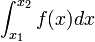
.
Wenn wir das Funktionsargument x abrunden (schwarze Kurve), entsteht ein Integral, das einen kleineren Wert als das ursprüngliche Integral hat. Runden wir auf (rote Kurve), entsteht ein Integral mit einem größeren Wert:
 |
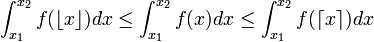 |
In unserem Zusammenhang sind x1 und x2 positive ganze Zahlen. Deshalb gilt
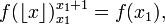
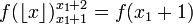

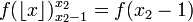
Wir können die obigen Integrale daher folgendermaßen vereinfachen:
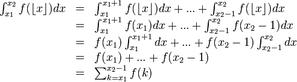
für die Fläche unter den schwarzen Rechtecken sowie
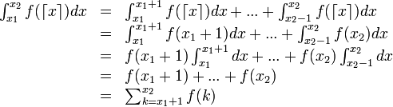
für die Fläche unter den roten Rechtecken. Zusammenfassend gilt also
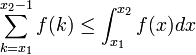
und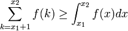
Für unser Problem setzen wir f(k) = ln(k), x1+1 = 2, und x2 = n. Also können wir abschätzen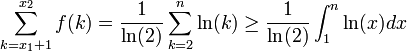
Das Integral ist leicht zu lösen, und wir erhalten
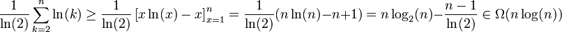
Folglich gilt:
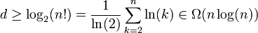
Mit anderen Worten: Kein Sortieralgorithmus auf Basis paarweise Vergleiche ist asymptotisch schneller als Mergesort, denn die Anzahl der Vergleiche (= Tiefe des Entscheidungsbaumes) ist
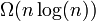
. Falls man einen schnelleren Sortieralgorithmus benötigt, muss man ein anderes algorithmisches Prinzip verwenden.Effizientere Sortieralgorithmen
Wir haben gezeigt, dass mit paarweisen Größenvergleichen allein kein Sortieralgorithmus schneller als sein kann. Um einen besseren Algorithmus zu finden, dürfen wir nicht nur die relative Größe der Schlüssel (also die Ordnung) berücksichtigen, sondern müssen die Werte selbst verwenden. Der entscheidende Trick dabei ist das
Bucket-Prinzip
Man definiert eine Funktion quantize(key, M), die jeden Schlüssel auf eine ganze Zahl im Bereich [0,...,M-1] abbildet. Mit Hilfe dieser Zahlen werden die Schlüssel auf M Buckets aufgeteilt, und das Sortieren kann dann in jedem Bucket getrennt erfolgen. Am Ende setzt man aus den Inhalten der Buckets das gesamte Array (sortiert) wieder zusammen. Wir zeigen unten, dass man damit lineare Zeit erreicht.
Um für das Sortieren brauchbar zu sein, muss die Funktion quantize() Ordnung erhaltend definiert sein:
wenn key1 <= key2, gilt auch quantize(key1, M) <= quantize(key2, M)
Eine solche Abbildung nennt man Quantisierung. Allgemein bekannt ist der Prozess der Quantisierung z.B. bei Digitalkameras: Hier wird in jedem Pixel eine reell-wertige Lichtintensität gemessen, die im resultierenden Bild mit nur 256 Intensitätsabstufungen pro Farbe abgespeichert wird (bzw. mit bis zu 65536 Abstufungen bei Kameras mit sogenanntem "high dynamic range"). Bleibt die Ordnung bei der Abbildung von Schlüsseln auf natürliche Zahlen nicht erhalten, spricht man von Hashing. Hashing wird zur Implementation von Hashtabellen nutzbringend eingesetzt.
Der einfachste Fall liegt vor, wenn die Schlüssel bereits genze Zahlen im Bereich [0,...,M-1] sind. Dann ist die quantize() einfach die Identität. Wir nehmen an, dass die Daten als Schlüssel/Wert-Paare in einem Array a gespeichert sind, und wir können das Sortieren wie folgt implementieren:
def integerSort(a, M):
# erzeuge M leere Buckets
buckets = [[] for k in range(M)]
# verteile die Daten auf die Buckets
for k in range(len(a)):
buckets[a[k].key].append(a[k]) # a[k].key sind Integer-Schlüssel in [0,...,M-1]
# setze das Array a aus den Buckets sortiert wieder zusammen
start = 0 # Anfangsindex des ersten Buckets
for k in range(M):
end = start + len(buckets[k]) # Endindex des aktuellen Buckets
a[start:end] = buckets[k] # Daten an der richtigen Position in a einfügen
start = end # Anfangsindex für das nächste Bucket aktualisieren
Das Array a ist am Ende sortiert, weil wir den Inhalt der Buckets nach aufsteigendem Bucket-Index, und damit automatisch nach aufsteigenden Schlüsseln, in a einfügen. Das Sortieren ist außerdem stabil, da Daten mit gleichem Schlüssel immer hinten an das jeweilige Bucket angefügt werden.
Die Komplexität des Algorithmus ist
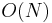
mit N = len(a), solange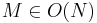
gilt: Das Erzeugen der Buckets erfordert
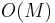
Schritte und das Verteilen der Daten auf die Buckets Schritte (weil bucket[k].append() amortisiert konstante Komplexität hat). Das Zusammensetzen des sortierten Arrays wird vom Kopieren der Daten dominiert, welches die Komplexität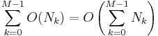
besitzt, wobei Nk=len(buckets[k]) die Größe des k-ten Buckets ist. Die Gesamtanzahl der Daten in allen Buckets zusammen ist aber gerade wieder die Größe von a, also
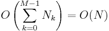
Nach der Sequenzregel ist die Gesamtkomplexität somit
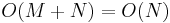
, falls gilt.Bucket Sort
Der Algorithmus wird nur wenig komplizierter, wenn die Schlüssel beliebig sein können, aber eine ordnung-erhaltende quantize()-Funktion vorhanden ist. Allerdings geht bei der Quantisierung, also der Abbildung von Schlüsseln auf Bucket-Indizes, ein Teil der Schlüsselinformation verloren. Die Elemente im selben Bucket haben im Allgemeinen nicht exakt den gleichen Schlüssel, so dass jeder Bucket noch explizit sortiert werden muss. Diese Tatsache führt zu einer zusätzlichen Einschränkung: einerseits muss für die Anzahl der Buckets nach wie vor
gelten, aber andererseits sollte jeder Bucket nur wenige Daten enthalten, so dass das Sortieren innerhalb der Buckets effizient ist. Wir fordern deshalb, dass
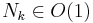
sein soll. Unter der Voraussetzung, dass quantize() die Daten gleichmäßig auf alle Buckets verteilt (dazu unten mehr), gilt für die Bucketgrößen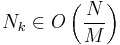
denn wir verteilen N Elemente auf M Buckets. Beide Bedingungen sind erfüllt, wenn
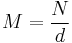
gilt, wobei d eine Konstante unabhängig von N ist. In der Praxis erzielt man gute Resultate mit d ≈ 10 (die beste Wahl hängt im konkreten Fall von der Schlüsselverteilung und von der quantize()-Funktion ab). Wir übergeben die Konstante d und die quantize()-Funktion als Parameter an den Algorithmus:
def bucketSort(a, quant, d):
N = len(a)
M = int(N // d) + 1 # Anzahl der Buckets festlegen (+1, damit es mindestens ein Bucket gibt)
# M leere Buckets erzeugen
buckets = [[] for k in range(M)]
# Daten auf die Buckets verteilen
for k in range(len(a)):
index = quant(a[k].key, M) # Bucket-Index berechnen
buckets[index].append(a[k]) # a[k] im passenden Bucket einfügen
# Daten sortiert wieder in a einfügen
start = 0 # Anfangsindex des ersten Buckets
for k in range(M):
insertionSort(buckets[k]) # Daten innerhalb des aktuellen Buckets sortieren
end = start + len(buckets[k]) # Endindex des aktuellen Buckets
a[start:end] = buckets[k] # Daten an der richtigen Position in a einfügen
start += len(buckets[k]) # Anfangsindex für nächsten Bucket aktualisieren
Wir verwenden zum Sortieren der Daten in jedem Bucket insertionSort(). Dies ist aus zwei Gründen eine gute Wahl: Erstens haben wir die Buckets so konstruiert, dass jeder Bucket nur wenige Elemente enthält (), und für kleine Arrays ist Insertion Sort der schnellste Algorithmus. Zweitens ist Insertion Sort ein stabiler Sortieralgorithmus, und demzufolge ist auch das gesamte bucketSort() stabil.
Unter der Voraussetzung, dass quantize() konstante Zeit für die Quantisierung eines Schlüssels benötigt, unterscheidet sich die Komplexitätsanalyse von bucketSort() nur in einem Punkt von integerSort(), nämlich durch das zusätzliche Sortieren in jedem Bucket. Bei Verwendung von Insertion Sort hat dies quadratische Komplexität in
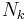
, aber wenn erfüllt ist, gilt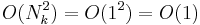
. Das Sortieren hat also konstante Komplexität pro Bucket, und somit ist die Gesamtkomplexität von bucketSort() linear in N, wie am Anfang des Abschnitts gewünscht.Allerdings steht und fällt diese Analyse damit, dass die quantize()-Funktion die Daten tatsächlich gleichmäßig auf die Buckets verteilt. Andernfalls könnten im schlechtesten Fall alle Daten in einem einzigen Bucket landen, und dann hätte bucketSort() quadratische Komplexität. Die quantize()-Funktion muss deshalb je nach der Wahrscheinlichkeitsverteilung der Schlüssel immer wieder anders festgelegt werden. Sehr einfach ist dies, wenn die Schlüssel in einem gewissen Intervall [U,...,V) gleichverteilt sind: dann kann man einfach das Intervall [U,...,V) durch eine lineare Gleichung auf das Intervall [0,...M-1] abbilden und dann abrunden. Für U = 0 und V = 1 erhalten wir beilspielsweise:
Beispiel:
# keys sind reelle Zahlen in [0, 1)
def quantize(key, M):
return int(key * M)
Die Definition einer geeigneten quantize()-Funktion für eine andere Schlüsselverteilung ist Bestandteil einer Übungsaufgabe. In der Praxis findet man allerdings, dass die Verteilung der Daten auf die Buckets nicht übermäßig kritisch ist -- bucketSort() bleibt auch dann ein sehr schneller Algorithmus, wenn die Verteilung nicht ganz gleichmäßig gelingt. Die obige Implementation ist somit ein guter Default für viele Anwendungen.